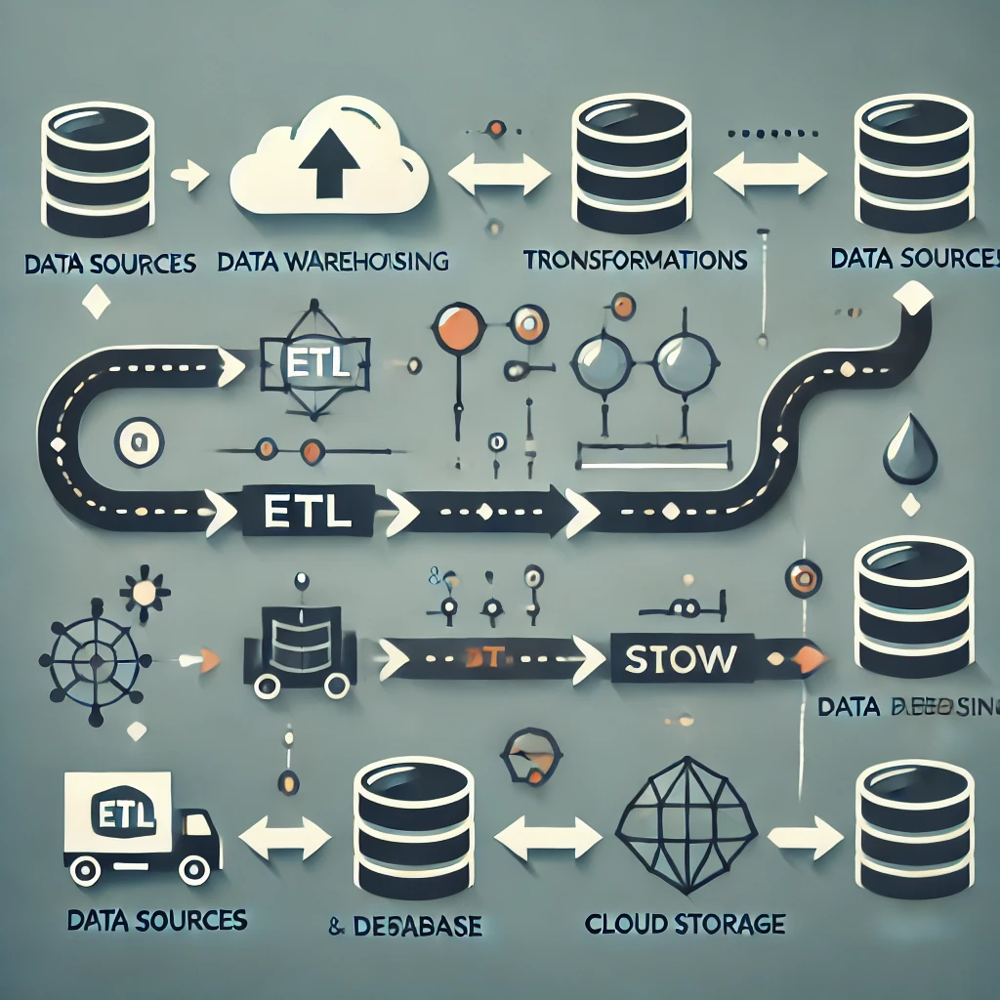

Portfolio Summary
I am a dedicated Data Scientist and Machine Learning Engineer with expertise in Python, SQL, and C#. I am skilled in machine learning, statistical modeling, and data analysis. With a proven track record of developing high-precision models and providing actionable insights, I excel at leveraging data to solve complex problems and support data-driven decision-making.
Technical Skills
Languages: Python, SQL, C#Machine Learning: scikit-learn, TensorFlow, Statistical Modeling, Unsupervised Learning, KNN, SVM, Random Forest, Decision Tree, Naive Bayes, NLPData Analysis: NumPy, Pandas, EDA, Feature EngineeringVisualization: Matplotlib, Seaborn, Tableau, StorytellingDatabases & Tools: MSSQL, PostgreSQL, Oracle, Git, REST API, AWS
Projects
Disease Data Modeling and Warehousing Project

Developed a scalable PostgreSQL data model with ETL pipelines for disease data storage and analysis.
Created ER diagrams and dashboards to visualize disease trends, enhancing healthcare decision-making.
Compared AWS architecture performance using Snowflake vs. PostgreSQL for cost-effectiveness.
Dropout Rate Prediction
Implemented a Random Forest model with 87% AUC, outperforming a Decision Tree model.
Analyzed 73,000 records, identifying trends such as dropout rates in larger schools and Regents diploma distribution.
E-commerce Purchase Prediction
Built a KNN model with 97.13% accuracy on e-commerce data, identifying customer segments.
Segmented customers for targeted marketing strategies, leading to increased conversion rates.
Education
Master of Science in Data Analytics & Visualization
Katz School of Science & Health, Yeshiva University | New York, NY | Jan 2024 - Expected May 2025 | GPA: 3.5
Bachelor of Technology in Computer Science Engineering
Guru Nanak Institute of Technology | Kolkata, INDIA | May 2018 - May 2022 | GPA: 3.6